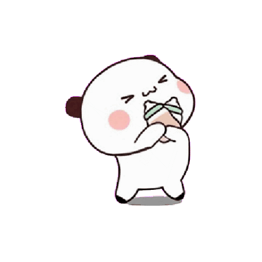
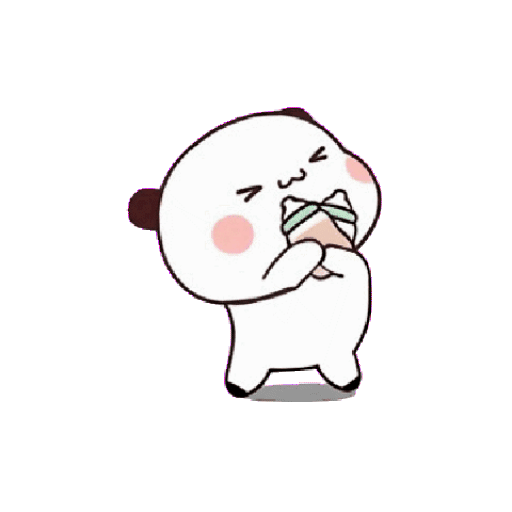
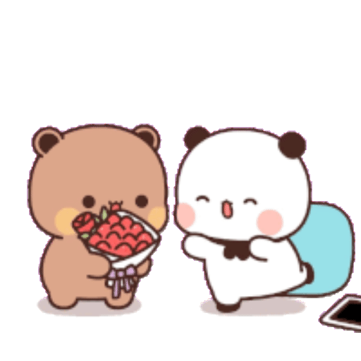
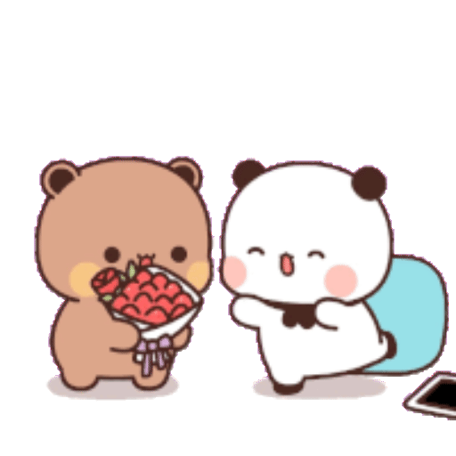
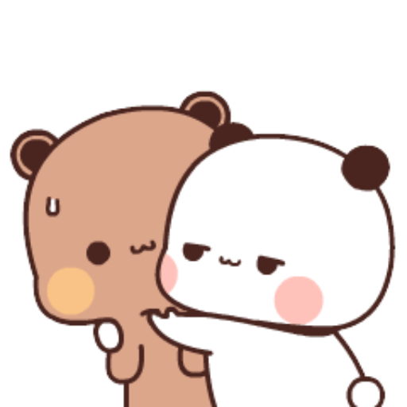
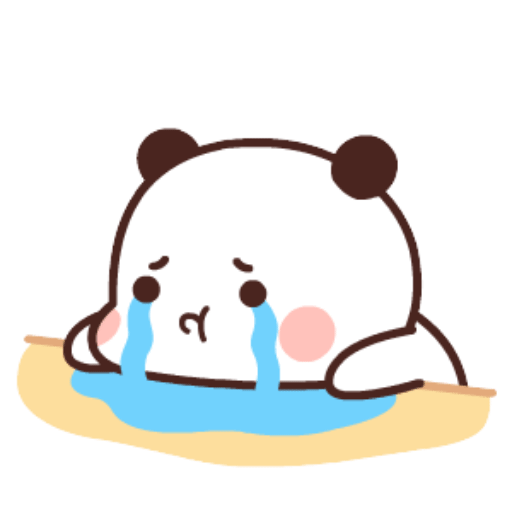
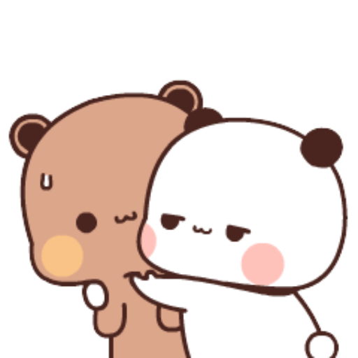
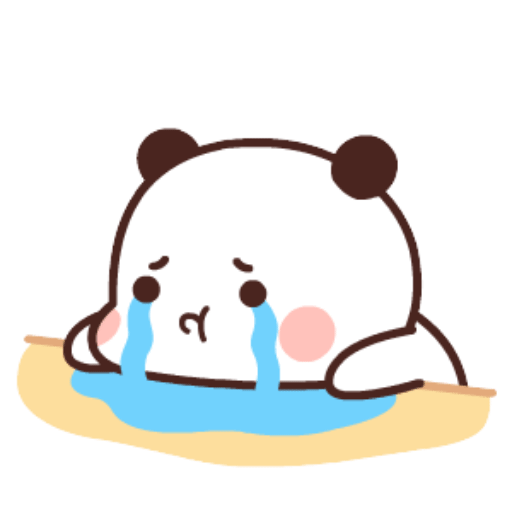

Sentuh LOVEnya!


 


 

 




HALLO SAYANGG, tepat di tanggal 07/08/24 DIMANA HARI INI ADALAH HARI SPESIAL KITAAA. tebaak apa hayoo
IYAAAPPSSS BENAAR, hari ini adalah hari mensive pertamaaa kita shshss :p
Happy 1st Mensiversary sayangg, terimakasih banyaak udah mau menjalani hubungan sama aku, i'm verrryyy LUCKY to have met youu heehehe, AKU BENEER BENER BERUNTUNG BANGET!
aku beneeran se beruntung bahkan se bahagiaa ini karena bisa bertemu kamu, terimakaaasyi banyak yaaa sudah sabar sama semua sifat aku yang nyebeeliin ini huhuu INTINYA TERIMAKASIH BANYAAK!
SHSHSH PROUD OF U!!! karena syudah sabar ngehadepin sikap aku yang kadaaang gajeeelaaz ini
hmmm... KAYANYAAA AKU CEWE YANG PALING BERUNTUNG DEEHH??
kalo ditanya kenapaaa.... YA KAREEENAAA aku punya cowo yang sebaikkk, se sabaaar dan selucuu KAMUUU ehehehe
kadang aku merasaaa bangga banget bisa fasyalan samaaa kamu, SOALNYA KAN YANG NAKSIR KAMU TUH BUANYAAAK ANJIR tapi aku pemenangnyaaaa heeheee wleeeee :p
oh iya.... KAMU JANGAN SERING BANDING BANDINGIN DIRI KAMUUU SM MANTAN AKUU, jelas jelassss kalian bedaaaa && yang pastinya kamu pemenangnyaa
aku....nih.....sayang....kamu..... (SAYANG BANGET BAHKAN)
OH IYAAA... terimakasih yaa kamu syuda lahir di dunia ini (SEHARUSNYA AKU BILANG TERIMAKASIH KE IBUMU SIIH)
ehshsh berkat adaaanyaaa kamu, aku jadi tau kalo ga semua cowo sejahat dan se aneh ituuuu
KAMU BEDAAAA && KAMU YANG PAALING PLAING PAALING SEMPURNAAA, hehee iyadong cowoku gituulohh
HEHEHE MAAF YAAA KALO CAPEE BACA INI SEMUUAAAA, iloveyou
i feel lucky meeting you thank you for everything you did to me when i was sad, thank you for making me laugh in the middle of the night, you've really made me alive, never regret meeting you, you're the best person i've ever meet.
hehehe terimakasih banyaak yaa udah buat aku merasa dicintai lagiii bahkan happy lagii. AKU SENENGG BANGET BISA KENAL KAMUU, i love youu
daan terimakasih banyak udah selaaluu mengusahakan apaaapuun buat aku, aku beneran SENEEENGGG BANGET!
maaf kalo alay..... TAPI AKU BENERAN SE SAYANG ITU SAMA KAMU PLLZZZZ
SHSHSHS maaf maaf maaafff kalo aku belum bisa menjaaadi yang terbaik buat kamuu huhuhu
loveeee you so much, i love you more than anything, i love you 3000, i love you i love you I LOVE YOUU SAYANG
Klik untuk Geser!
baca sampai akhir yaaa sayang. Happy 1st Mensiversary sayangku cintaku lucukuuuu, aku sangat sangat saangaat beruntung bisa ketemu cowo se sabar dan sebaik kamuu, aku beneeran se sayang itu sama kamu bahkan aku se bersyukur itu sama kamuu! thank you for being the best BAHKAAN sudah sangat yang terbaik buat aku, I hope our relationship will last long into old age! terimakasih sudah menjadi rumah ternyaman aku, terimakaasih banyaak yaa kamu udah mau dengerin semuaa cerita aku dengan baik, sekali lagii maaaff akunya kalo masiii kuurang huhuhu. you are so absolutely amazing and you make me smile and laugh so much and i hope you know that and i want you to know and remember that every single day i love you so much and i am so scared everyday that i might lose such an amazing person like yourself
i love you so much sayangku cintaku lucukuuu. 🤍